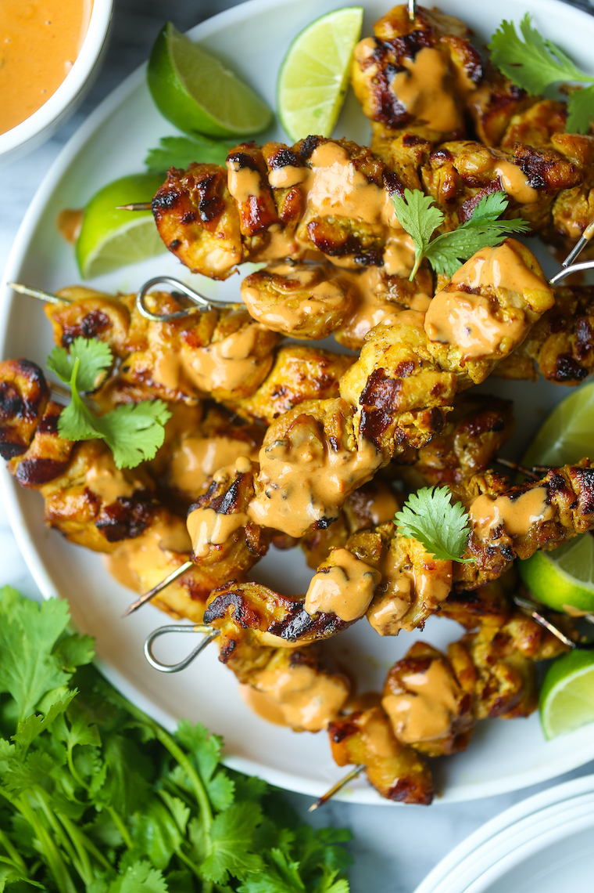
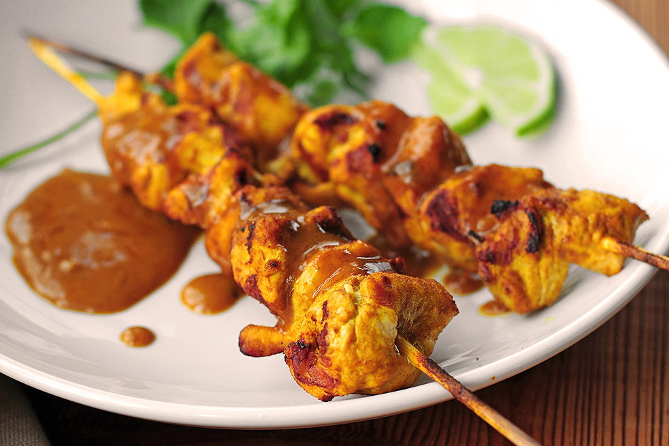

Satay may consist of diced or sliced chicken, goat, mutton, beef, pork, fish, other meats, or tofu; bamboo skewers are often used, while rustic style of preparations employ skewers from the midrib of the coconut palm frond. These are grilled or barbecued over a wood or charcoal fire, then served with various spicy seasonings.
|
|  |
Instead, it’s the most perfectly grilled, golden-brown chicken bites with just the right amount of charred, smoky goodness. The marinade takes the chicken to the next level of flavor town with the help of a simple coconut milk marinade and some pantry spices. And I know I say this all the time, but really, this creamy, zesty peanut-lime sauce is the best peanut sauce of your lives. SO SO SO good. |
|  |